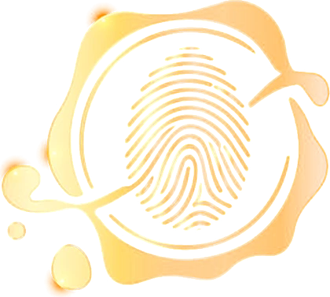

São 12 perguntas rápidas e honestas. No final, você recebe o seu diagnóstico completo: o seu lugar na fila, onde a espera mais te prende e o que isso diz sobre você.
Leva cerca de 3 minutos. Não existe resposta certa, só a sua.

Lendo as suas respostas…
Quanto maior a barra, mais você fica para depois nessa área.
Esperar sobrar é o mesmo que nunca começar.
28 . 10
às 20h
Quem é a pessoa mais importante da sua vida?
Primeiro você.
ENTRAR NO GRUPO DO WHATSAPP#PrimeiroVocê